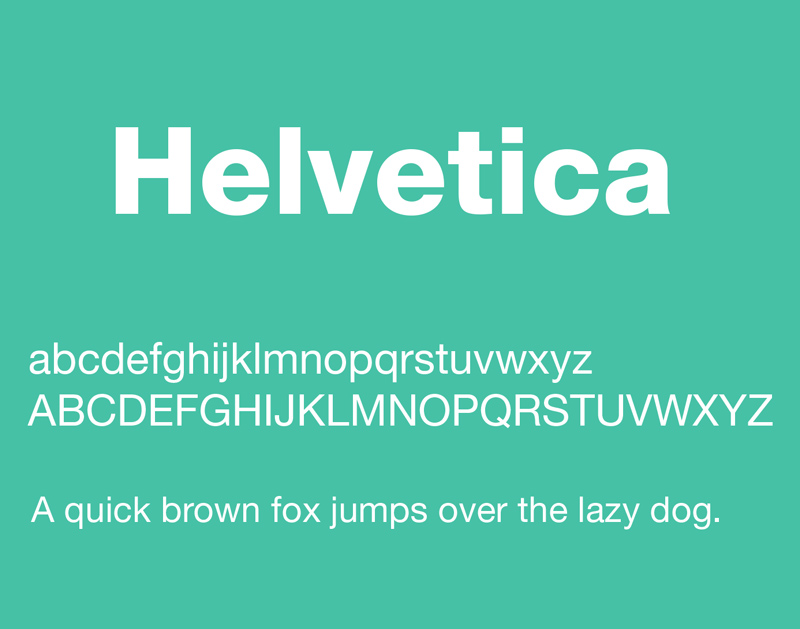

The All-Inclusive Guide to Web Typography Best Practices
August 27, 2014 Marc Schenker Web Design
Look around the Internet, and note how typography absolutely dominates web design in every aspect. After all, there’s a reason that web design is 95% typography. This makes a world of sense when you think about it. The Internet is all about content, and content means text and words. And that means typography.
The smart web designer knows this and will therefore devote a lot of careful thought and deliberation to getting typography right on any site that he’s working on. In his quest to make type both functional and attractive to the reader, he has to consider a bunch of different factors when planning the information architecture of the site. What sort of fonts are the most readable? Which fonts are easy for readers to skim through? What about fonts that are legible?
Because of all of these questions and considerations, it’s not that easy to nail typography for a website on the first try. However, we scoured the web and found this seminal bit of research from Smashing Magazine into the current, best practices of typography, which are eye-opening, to say the least. We’ve dug deep into this data to present you with an authoritative guide to typography best practices on the Internet. Enjoy.
Headings
The headings in your site copy are arguably very important because depressing research shows that the majority of people only read headlines on the Internet. When user behavior is such that many of your readers won’t even bother with the body copy, then you have to make the typeface of the headings really stand out to grab their attention and persuade them to read further.
According to the aforementioned Smashing Magazine study from 2013, it’s almost a tie between sans-serif and serif fonts for headings, with 51% of headings using sans-serif and just over 47% using serif. Serif fonts have become increasingly popular in the last few years, mainly due to the belief that they stand out in headlines and offer site visitors a readable structure.
On the issue of popularity, the two most popular serif fonts for headlines are Georgia and Chaparral Pro while the two most popular sans-serif fonts for headlines are Arial and Freight Sans Pro.
While you can certainly experiment with your own typefaces for the headings on your website, know that the popularity of these fonts is because of positive feedback from readers.
Body
The body of your website makes up the most important part of your content—even if fewer people read that than the actual headings and headlines on webpages. Unlike the near tie between sans and sans-serif fonts in headings, the clear winner when it comes to body copy is serif. According to the same study, a whopping 61.5% of websites utilize serif fonts in their body copy, but just a paltry 36.5% use sans-serif fonts for their body copy.
Let’s look at how this breaks down even further. The most frequently used serif fonts for body copy are Georgia and Chaparral Pro, almost mirroring the proportions for headings. On the sans-serif front, the most frequently used sans-serif fonts for body copy are Arial and Helvetica.
An Interesting Note
It’s noteworthy that the study also determined that the majority of websites currently don’t use any standard fonts as their main typeface. Some 39% of the body copy and 66% of the headlines in the websites looked at in the study didn’t use standard fonts. One theory for this somewhat surprising finding is that services like Fontdeck and Typekit make it easier than ever for brands to set themselves apart in a unique way from their competitors.
Here’s the takeaway from all of this: Yes, you can play it safe and choose a “non-threatening,” standard font, but many websites have boldly opted against this. They’re finding that their site visitors and readers are very receptive to unconventional typefaces, so long as they don’t hurt the user experience on websites.
Background
It goes without saying that a respectable background in web design is whatever color lets the text on it stand out in contrast. This naturally makes it super-easy for site visitors to read the copy much more efficiently, thereby contributing to readability. The Smashing Magazine study found that most websites preferred a dark-on-light arrangement. This means darker text on a lighter-colored background.
However, what’s really important to point out for the state of typography currently is that the dark-on-light arrangement is getting less harsh. For instance, some websites are experimenting with a dark-gray-text-on-beige-background arrangement. In such a scheme, the contrast is less pronounced, yet still provides readers with a comfortable reading experience that facilitates easy scanning of every line.
Unsurprisingly, when it comes to body copy, the old favorite of black text on a white background is still the gold standard.
Besides being very easy to read because of the sharp contrast, the black-on-white effect also harkens back to the classic color format in newspapers, which also explains its widespread popularity in Internet body copy.
Typical Font Size for Headlines
The trend is definitely bigger is better, at least as far as headlines on the web are concerned. 38 pixels is the average these days when it comes to the font size for headlines. That’s actually an increase of 10 pixel sizes since Smashing Magazine’s last study in 2009! Clearly, to attract mainly headline-reading users, more and more websites have had to resort to boosting the size of their headline pixels.
In case you’re curious, BootstrapBay’s blog uses the Roboto font at 28 pixels for the headlines, 24 pixels for the headings and 16 pixels for the body copy. It should be pointed out, though, that the most frequently used font sizes for headlines range from 20 to 32 pixels, putting BootstrapBay’s blog smack dab in the middle of what’s popular.
Typical Font Size for Body Copy
Body copy is a different beast than headlines, so it’s no shock that the typical font size for body copy is considerably smaller. However, one thing holds true, even for body copy: the general trend for the font size to get larger.
In the study, almost the same number of websites used 14 and 16 pixels for body copy. Compared to the 2009 study of web typography by Smashing Magazine, this represents a noteworthy increase of two pixel sizes, as most websites only used 12 and 14 pixels for body copy back then.
Again, BootstrapBay’s blog is a perfect example of a typography best practice that has evolved with the times: We use 16 pixels for the body copy on our blog. Bonus Fact: The most popular (as in frequently repeated) ratio for headline to body font sizes is 2.5. Basically, you take the pixel size of the headline and divide it by the pixel size of the body copy to get this all-important ratio.
Body Copy Optimal Line Length
The rule, generally speaking, is that a longer line length should equal a higher line height. When you multiply the font size of your body copy by 1.46, you’d get the optimal line height for your website. You can then adapt that to the style of your font.
When you take this product and then multiply that by 24.9, you’re left with your website’s optimal line length.
Don’t, though, forget that any efficient layout needs to take into consideration margins, padding and gutters, so that it doesn’t look too cluttered.
How Many Characters on Every Line
It’s important to hit that particular sweet spot in the number of characters per line for your website to look aesthetically pleasing. The study found that the majority of websites today actually average 83.9 characters a line at widescreen resolution.
Why is it like that? It’s likely that designers seek to balance font sizes with the quantity of text shown in narrow displays. If you increase the number of characters beyond this average, it would result in a difficult reading experience as the font sizes would have to drop to accommodate the number of characters per line.
If you increase the number of characters beyond this average too much, you run the risk of having your body copy appear too small; decrease the number of characters too much, and you run the risk of swelling your body copy closer to what your headline and heading sizes are.
Responsive Typography
Here’s some good news that should please those who like looking at websites across different platforms: 42% of the websites in the study featured responsive typography. While that number should ideally be closer to 100%, that’s really not too bad when you consider that responsive design is only about four years old.
42% of the websites tested featured some form of scaling when browser sizes changed. These included both minor and major changes, ranging from image scaling to fit the new browser width to menus being replaced by icons and multiple columns transforming into single columns.
The other websites that were not responsive instead relied on either a mobile app or mobile website. Naturally, though, forcing users to first download an app or go to a separate mobile site is more inconvenient from the users’ perspective than just having everything properly resize in their browsers. Time will tell if users will continue to put up with this.
The Big Takeaways From All of This
Okay, so now you know what’s up with typography in the present day. Sure, trends in web design change frequently and quickly, but this study data shows that some trends are very consistent and reliable. Take, for instance, the ever-increasing change in font sizes, both for headings and body copy. In addition, more and more websites are also going responsive, and you can expect the 42% number to easily creep up in the next year or two. Easily!
As a web designer, you know how vital typography is to a user-friendly, aesthetically pleasing and all-around well-functioning website. Try not to get caught up too much in all of the hubbub of images, new design trends and whatnot. At the end of the day, the basics like implementing user-friendly typeface are still the most important aspects of web design.
Here are the typography best practices that you should leave with after reading this guide:
- Headlines use an approximately equal percentage of serif versus sans-serif fonts
- Body copy uses more serif fonts than sans-serif fonts
- Non-standard fonts dominate on websites
- Backgrounds still operate on the dark-on-light color scheme
- Font sizes for headlines and body copy keep increasing
- No more than 84 characters per line
- Just under half of all websites feature responsive typography
We hope we’ve inspired you to really think about the selection of typeface the next time you’re designing a website for a new client. Typography is something that shouldn’t be rushed, and the results can be stellar when you take these best practices and the user experience to heart.